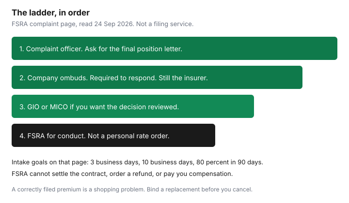

Insurance · Canada
How to Escalate an Ontario Auto Insurance Complaint Through FSRA Without Getting Lost
An Ontario auto premium that jumped, or a claim that has sat for months, does not start at the regulator. FSRA’s own steps put the insurance company’s complaint officer first, then the company’s ombuds service, and only then a complaint to the regulator. FSRA can look at whether a licensed company followed the acts and the rules it filed. It does not sit as a court that rewrites your premium or writes you a cheque. This page is that ladder, in order, with the evidence pack and the clocks published on FSRA’s complaint page. It is education for a household that is stuck. It is not a filing service and not legal advice.
If the dispute is the price of a policy that was calculated correctly under a filed rule, the practical path is a new quote with the same limits, not a regulator file. Use this ladder when you believe a rule was misapplied, a claim is being handled outside the policy, or a licensed person will not answer.
Disclosure: This page is education. There is no natural affiliate offer here, and we do not link to a complaint-for-a-fee service. Saving Optimizer does not claim a partnership with FSRA, any insurer, or any ombuds service. We do not file complaints for readers. Steps and service goals below were read on 24 Sep 2026 and can change. Use the current form on fsrao.ca.
Key takeaways
- Start with the insurer’s complaint officer and keep a copy of the final position letter. FSRA asks for that letter, or for proof you tried to get it.
- Use the company’s ombuds step before you treat the file as ready for the regulator. FSRA says that office is required to respond.
- FSRA can review conduct against the acts and the filed rules, and it can warn or enforce. It cannot settle the contract, order a refund, or get you compensation.
- A high premium that matches the filing is a shopping problem. A conviction or claim coded wrong is a calculation complaint, still starting at the company.
- FSRA’s complaint page: licensing check within 3 business days, a compliance officer contact goal within 10 business days, and a goal to complete 80 percent of reviews within 90 days. Complex files take longer.
- The Insurance Brokers Association of Canada does not decide your premium. In Ontario, broker conduct is the Registered Insurance Brokers of Ontario. Switching insurers is allowed once the new policy is bound.
Start with the insurer complaint officer and request a final position letter
Find the complaint officer, not the call-centre script that says the renewal “is what it is.” The name is on the company’s website, on the policy service page, or in the complaint section of the documents you were given at purchase. FSRA’s complaint page says to contact that officer, follow the company’s process, and wait for a final position letter. That letter is the company’s decision. It is also the document FSRA says it needs before it will review the complaint.
Write the complaint in your own words. FSRA’s page asks people not to send generic generated text, because it does not help the review. A useful letter is short: the policy number, what you asked for, what happened, the dollar or the claim decision you dispute, and what you want changed. Attach the pages. Do not attach your whole life.
| Item | Why it is in the envelope |
|---|---|
| Policy number and named insureds | So the file is not opened on a spouse’s old quote. |
| The decision you dispute | Renewal premium, a refusal to renew, a claim delay, or a payment you say is short. One decision per letter if you can. |
| The rule you think was missed | A conviction that was withdrawn, a driver who does not live there, a deductible that does not match the declarations. Quote their document. |
| A date you will follow up | Companies have their own internal clocks. Write the date they gave you, not a date you invented. |
While you wait, keep notes of dates, times, and names, which is what FSRA tells consumers to do during the company process. If the premium is unaffordable and another licensed insurer will write the same limits, you may shop in parallel. Do not cancel the current policy until a replacement is bound. A gap is its own underwriting fact. The loyalty and switching guide is the overlap, not a reason to skip the complaint if the company miscalculated.
Use the insurer ombuds step before regulator escalation
FSRA’s auto-insurance explanation tells consumers who are unhappy with the company to contact that company’s ombuds service next, and says the company is required by law to respond. Do this before you tell yourself you have “gone as far as the insurer will go.” The ombuds office is still the insurer. It is the internal review that produces, or confirms, the final position letter. Ask for the letter if the first reply was a phone call.
Independent of the company, FSRA’s complaint page points non-life insurance disputes that need an outside review of the decision toward the General Insurance OmbudService (GIO), and mutual insurers toward the Mutual Insurance Companies OmbudService. The OmbudService for Life and Health Insurance is the life and health body. It is the wrong door for an auto premium or an auto claim. GIO’s 2025 annual report describes its own stage targets, barring exceptional circumstances: informal conciliation within 45 days of entering that stage, mediation within 60 days, and senior adjudication within 90 days. Those are GIO’s targets for a file that is in its process. They are not FSRA’s clocks, and a GIO recommendation is not a court judgment. Use GIO when you want an independent look at the company’s decision. Use the FSRA file, below, when you want the regulator to look at conduct.

What FSRA can and cannot order on rates vs conduct
FSRA approves company rate and risk-classification filings for the Ontario auto market. That is a market role. It is not a desk that sets your household’s premium after you write in. A complaint that says “this is more than my neighbour pays” will not produce a personal rate order.
| FSRA can | FSRA cannot |
|---|---|
| Check whether the licensed person or company followed the acts and regulations FSRA oversees. | Settle a disagreement about the contract, issue a refund, or get compensation for you. |
| Use education, warnings, or enforcement if rules were missed or conduct should change. | Change the law or the regulation because a premium feels high. |
| Refer you to another body if the issue is outside its jurisdiction, or if no misconduct is found. | Order the company to charge you last year’s price. |
Sort your facts before you pick a door. If the declarations page charged for a conviction that was withdrawn, or for a car you sold, that is a misapplication of the file. Start with the complaint officer and ask them to rerun the rating. If the premium matches a filed conviction surcharge and you simply hate the number, shop the conviction guide and the broker-versus-direct worksheet. If a claim cheque ignores a coverage you paid for, the complaint is the claim decision, and the collision checklist is the record you should already have. Accident-benefit dollar choices are a different guide: mandatory versus optional accident benefits. Do not file an accident-benefit dispute as if it were a rate complaint, or the reverse.
Build an evidence pack: quotes, renewal notices, emails, claim notes
One folder, digital is fine, named with the policy number. Build it while the company process is running, not the night you decide to write FSRA.
- The last two declarations pages and the renewal notice that changed the price, with the page that lists drivers, convictions, and claims if the company printed one.
- Quotes from the same company and, if you shopped, quotes from others that used the same liability limit and the same deductibles. Circle anything that is not identical.
- Emails and portal messages. Export them. A screenshot with no date is weaker than the message itself.
- Claim notes you were given: the claim number, the fault percentage if this is a claim dispute, and the payment calculation.
- The abstract, if the dispute is a ticket, so you can show a withdrawal that the company still rated.
- A one-page timeline: date, who you spoke to, what they said. FSRA asks for this kind of note during the company process.
Remove account numbers you do not need to share, and do not send medical detail that the complaint does not require. Send copies. Keep the originals.
File via FSRA’s complaint process and track timelines
FSRA’s complaint page says it will proceed when it has the final position letter. If the company has not sent one, you may still file if you show proof of your attempts to get it. There is a named form and an anonymous form. The anonymous form means FSRA cannot contact you. For a premium or claim you want followed up, use the form with your name.
The page lists three ways to send the form: email to contactcentre@fsrao.ca, fax to 416-590-8480, or mail to 25 Sheppard Avenue West, Suite 100, Toronto, ON M2N 6S6. The Contact Centre is the intake. Its published service statements, read 24 Sep 2026, include a call back within 1 business day if you leave a message, an email response within 3 business days, and a licensing check within 3 business days. If the company or person is not licensed, they may point you elsewhere. If they are, the file goes to the Complaints and Risk Assessment Unit. You should receive a file number. The page says a compliance officer will contact you, with a service standard within 10 business days, and may ask for more documents. The review goal on that page is to complete 80 percent of complaints within 90 days. Complex files take longer. An older FSRA service-standards guidance page has also described 120-day and 270-day assessment targets for complaints that contain the available information. Use the clock on the complaint page you are actually in, and the file number they gave you, rather than a single national number of days.
FSRA says its decision is final, and that it may look again if you provide new and relevant information. Enforcement outcomes, when there is one, are posted on FSRA’s enforcement pages. Most household files end in a finding about conduct, a referral, or no misconduct. Plan your renewal on the assumption the premium will not be rewritten for you. Shop the coverage you need on a date that does not leave you uninsured.
When to involve IBAC/broker channels vs switching insurers instead
The Insurance Brokers Association of Canada is a national association of broker associations. It publishes education and advocacy. It does not adjudicate your premium and it does not replace the insurer’s complaint officer. Writing to IBAC because an Ontario renewal went up will not produce a final position letter.
If the problem is the broker — a coverage you say you asked for and did not get, a driver left off, a refusal to forward documents — the Ontario regulator for registered insurance brokers is the Registered Insurance Brokers of Ontario (RIBO). Agents and insurers are FSRA’s licensing world. Use the body that actually licenses the person. Ask RIBO or FSRA which licence you are looking at if the business card is unclear. Do not send the same package to every acronym and hope one of them orders a refund.
Switch when another licensed insurer will write the limits you need at a price you can pay, and the current company’s calculation is not wrong so much as expensive. Bind first. Cancel second. Keep the complaint open if you still want the conduct looked at; switching does not erase a misapplied rule on the old policy, and it does not pause a claim that is already open. If you are mid-claim, ask the new insurer and the old one, in writing, what happens to that claim before you move. The annual review is the calendar. A regulator file is not a renewal strategy.
Sources & date stamps
- FSRA, submit a complaint — complaint officer and final position letter; what FSRA can and cannot do; contactcentre@fsrao.ca; fax 416-590-8480; 25 Sheppard Avenue West, Suite 100, Toronto, ON M2N 6S6; 3 business days, 10 business days, 80 percent within 90 days. Used 24 Sep 2026.
- FSRA, auto insurance for consumers — company first, then the company’s ombuds service, then FSRA. Used 24 Sep 2026.
- FSRA, service standards guidance — also describes 120-day and 270-day complaint assessment targets. Used 24 Sep 2026.
- General Insurance OmbudService, 2025 annual report — informal conciliation 45 days, mediation 60 days, senior adjudication 90 days, barring exceptional circumstances. Used 24 Sep 2026.
Frequently asked questions
Can FSRA lower my Ontario auto insurance premium?
No. FSRA’s complaint page says it cannot settle a contract dispute, issue a refund, or get you compensation. It can review whether a licensed company followed the acts and its filed rules. A high premium that matches the filing is a shopping problem.
Do I need a final position letter before I contact FSRA?
FSRA says it needs the insurer’s final position letter. If the company has not sent one, you can still file if you show proof that you tried to get it. Start with the complaint officer, then the company’s ombuds service.
How long does an FSRA complaint take?
On the complaint page read 24 Sep 2026: a licensing check within 3 business days, a compliance-officer contact standard within 10 business days, and a goal to complete 80 percent of reviews within 90 days. Complex files take longer.
Should I write to IBAC about my premium?
The Insurance Brokers Association of Canada does not decide your premium. In Ontario, broker conduct is the Registered Insurance Brokers of Ontario. Insurer conduct is the company process and then FSRA. You may also switch once a new policy is bound.
Is this a complaint-filing service?
No. Education only. We do not file complaints and we do not link to fee-for-claim firms.